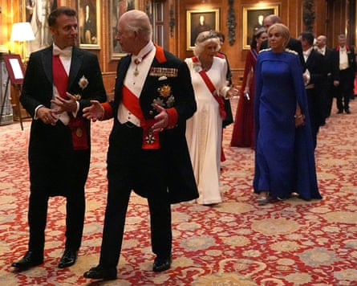

Monday
In all of the coverage given to Rachel Reeves’s tears during last week’s prime minister’s questions, one thing got rather overlooked. Crying in the House of Commons is not particularly unusual. It just becomes news when it’s the chancellor who is the one doing the crying. Even the financial markets take an interest: weird how a woman having a normal feeling can cause turmoil, but no one bats an eyelid at male sociopaths.
Only a day earlier, the new Labour backbencher Marie Tidball, who is disabled, was on the verge of tears while she was speaking against her own party’s welfare bill . No one batted an eyebrow. The former Tory MP Charles Walker was twice in tears in the chamber. The first in 2015 when David Cameron and William Hague tried to strongarm him into trying to remove John Bercow as speaker; the second in 2022 during a vote on fracking in the 49-day tenure of Liz Truss as prime minister.
And those are just the ones I can remember sketching. Then there is the crying that goes on out of sight and off camera. MPs frequently talk of being reduced to tears as whips and colleagues try to bully and threaten them into voting with their party in the lobbies. Most MPs try to pass this off as part of the job. “Politicians need to have a thick skin,” they say. Possibly, though, you have to wonder at the hypocrisy.
We are told that the reason Reeves cried was a personal matter. Though having an exceptionally bad week in one of the most stressful jobs imaginable and then hearing your boss refuse to back you during PMQs might make any of us cry.
And the last thing you’d want to do afterwards is to be pushed into a press conference the next day to try and show you’re OK. But that was what Rachel and the Labour party felt they had to do. It looked like an act of cruelty.
Tuesday
It seems The Salt Path may not be all it was cracked up to be. The book and film claimed to be the true story of Raynor Winn and her husband Moth but an investigation by the Observer has uncovered alleged discrepancies in Winn’s account. First, Raynor and Moth – aka Sally and Tim Walker – didn’t lose their house as the result of a naive business investment. The Observer claims that Sally had embezzled tens of thousands of pounds from the estate agency where she worked as an accountant. Instead of being taken to court, Sally and Tim borrowed money from a friend to cover the amount she had stolen. When she couldn’t repay the loan she had taken out, her house was repossessed, the Observer says.
Then there is the question of Moth/Tim’s health. Raynor writes that he had been diagnosed with corticobasal degeneration, a neurological condition that can cause increasingly severe physical and cognitive disability that invariably ends in death in about eight years. Moth/Tim is still alive 18 years after diagnosis, something Raynor puts down to the effects of their 630-mile walk along the South West Coast Path . The Observer has found nine specialists who consider this to be an impossibility. Sally/Raynor still insists that her account is the true one, has published medical letters on her husband’s condition and is taking legal advice.
This is a book that went on to sell 2m copies and became a film with an A-list cast. If the allegations are true, it’s strange how none of this came out before.
Wednesday
Emmanuel Macron may not have been granted the top venue for his address to both houses of parliament – Westminster Hall has been the stage for VVIPs like the Queen, the Pope, Nelson Mandela and Barack Obama – but it was still standing room only in the Royal Gallery. Which is more than can be said for some visiting heads of states.
I’ve been to several similar speeches where there have been plenty of empty seats towards the back shortly before the event was due to start as peers and MPs decide they can’t be bothered to turn up. Cue panic among the doorkeepers as they rush to save the visitor’s blushes by rounding up as many members of Westminster staff as they can to fill up the spaces.
Later that evening the French president attended a state banquet at Windsor Castle where he was introduced to the king, who was covered in medals from head to foot. All of them either awarded by his mother or himself. God knows what Macron and his wife Brigitte made of it. Perhaps you get used to this kind of thing when you’re a world leader.
Macron’s visit also prompted talk of the next world leader to get the full state treatment. Donald Trump . The rumour factory is in overdrive. One is that the government is trying to get round the problem of Agent Orange giving an address to parliament by inviting him over when the Commons is in recess. So sorry, Donald. We would have loved to hear you. But we’re closed.
Macron with a few medals and Charles with many at the Windsor Castle banquet.Photograph: Aaron Chown/Reuters
Thursday
One by one, some of those Tory MPs who either stood down in the face of the inevitable or lost their seats at the last election have joined the ranks of Reform. Next to join Team Nigel Farage has been Jake Berry, who was party chairman during Liz Truss’s brief time in No 10. I could have sworn I heard Berry on the radio a few weeks ago slagging off Reform. Given that Nige has already promised something in the region of £80bn worth of tax cuts with his pledge to raise the income tax threshold to £20K, a man who was at the centre of crashing the economy in 2022 looks to be an ideal fit.
Friday
It’s coming up to the anniversary of one of my more spectacular – and embarrassing – brain fades. On a Saturday in July last year, I was just having breakfast when the phone rang. It was Vicky Dawson, the organiser of the book festival at the Buxton International Festival. “Where are you?” she said. “Er … I’m at home,” I replied. There was a pause. “That’s not ideal,” she continued. “You’re supposed to be speaking at the Opera House in 10 minutes. We’ve got 600 people waiting to hear you.”
“But that’s not until next Saturday,” I said. “It’s in the diary.” “Then I think you’ll find you put it in on the wrong day,” she observed.
If it had been me left with explaining to a theatre why the speaker had not shown up, I would have been shouting and screaming at me. I guess this is why she is running a major festival and I’m not. Instead, she couldn’t have been nicer. These things happen, she said, understanding it had been a genuine mistake. “Could you come back next year?”
So on Wednesday 23 July I will be at Buxton Opera House. I expect to have some well-deserved piss-taking from Vicky and the audience for only being a year late.
Starmer: ‘What happens to the migrants we send back to you?’ Macron: ‘They try again.’Photograph: Andy Rain/EPA
No 10’s chief mouser Larry the cat: ‘It’s always been one in, one out round here.’Photograph: Chris J Ratcliffe/Reuters